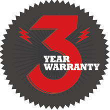

<div id="content">
    <div id="main">
      <div class="container">
        <h1 class="title-has-line">Warranty Info</h1>

        <div class="one_half">
          <p>We’ve been building snowboards for a long time but every time we’re ready to claim that we’ve seen it all, something new comes along. Let’s get this out of the way right off the bat&hellip; Be honest with us! If your board slides down the side of
            your car and lands on the contact point in the asphalt parking lot then smashes the edge of your board into the base&hellip; tell us that. We’ve seen it before! By the same token, if your longboard is broken in half and has tire tracks across the
            deck, be honest with us. Honesty goes a long way. In those cases, and many other similar cases, we will do our best to help you but it’s not a warranty issue. Since we make all of our boards here in the USA at our factory in Denver, we know what
            kind of inspections the boards go through before being shipped to our dealers.</p>
          <p>If you honestly think you have a warranty issue that is a result of a factory defect, you can take it back to the place of purchase or any Authorized Never Summer Dealer so they can take a look at the board and help you determine the best course
            of action. The Authorized Never Summer Dealer will call Never Summer’s warranty department and get a RETURN AUTHORIZATION NUMBER (RA#) so that your board can be sent to Never Summer and inspected. If you purchased the product from an authorized
            online dealer or you physically cannot make it to an Authorized Never Summer Dealer, you can contact Never Summer at warranty@neversummer.com to get the warranty process started. It is always helpful to send photos of the potential warranty issue
            along with a description of the issue when composing your warranty issue email. You should have already registered your board at neversummer.com/warranty after the purchase of your board. Thank you – but remember that all warranty claims must be
            accompanied by a sales receipt from the purchase of the board.</p>

        </div>
        <div class="one_half last">

          <p><a href="warranty-registration.html" class="warranty-button">Register Your Board</a></p>
          <hr class="small" />
          
          <hr class="small" />
          <p>Register today and you'll be automatically entered into the Ticket to Shred contest! You could win:</p>

          <ul>
            <li>A seat on the Monarch Mountain snowcat shred trip for you and a friend!</li>
            <li>A one week summer camp shred session at Woodward at Copper!</li>
            <li>A seat on the Steamboat Powdercats snowcat shred trip for you and a friend!</li>
          </ul>

          <p>*Airfare, food, lodging and travel are not included in the prize. See full contest rules on registration page.</p>

        </div>

        <hr class="small" />


        <h2>3 Year Limited Warranty*</h2>
        <p>Your new Never Summer Snowboard is warranted to be free of defects in material and/or workmanship for a period of three (3) years*
          from the original date of purchase. If Never Summer Industries determines, in its sole discretion, that your Never Summer Snowboard is defective, then Never Summer Industries shall, at its sole discretion, either repair or replace your Never Summer
          Snowboard without charge to you. All replacements are subject to availability. Never Summer Industries will not be responsible for any costs, losses or damages incurring as a result of loss or use to your Never Summer Snowboard.</p>
        <p>*1 year limited warranty on Evo Mini &amp; Pandora Mini.</p>
        <h2>Limitations</h2>
        <p>This limited warranty applies only to Never Summer Snowboards purchased from an Authorized Dealer and is extended only to the snowboard’s original purchaser.
          <br />All snowboards returned to Never Summer for warranty inspection must receive prior return authorization (RA), which can be obtained from an Authorized Never Summer Dealer. All snowboards must be shipped pre-paid and insured. Never Summer assumes
          no responsibility for damages during shipment. Shipping charges are non-refundable.</p>
        <p>All warranty claims must be accompanied by your original proof of purchase from an Authorized Never Summer dealer.
          <br />The following are excluded from this limited warranty:</p>
        <ol>
          <li>Damage caused by impact, misuse, abuse or neglect.</li>
          <li>Normal wear and tear.</li>
          <li>Cracks or splits in the topsheet due to impact.</li>
          <li>Any delamination to the top or bottom sheets due to impact.</li>
          <li>Stripped inserts due to improper mounting.</li>
          <li>Damage caused by the use of solvents, adhesives or LOC-TITE.</li>
          <li>Damage caused by impact with rocks, stumps, logs, rails, concrete, metal, or any other non-snow object.</li>
          <li>Modification to the board such as, but not limited to, cutting or modifying the tip or tail, as well as using T-nuts.</li>
          <li>Cracked edges are the result of normal wear and tear or impact. This is NOT a manufacturer’s defect and will not be covered under warranty.</li>
        </ol>
        <h2>Never Summer Warranty FAQ</h2>
        <p><strong>Q.</strong> I got a problem&hellip; I think I have a warranty issue but my board is still rideable and my backup board is a (insert other snowboard company here) and I definitely don’t want to get back on that thing. Can I send the board
          back to Never Summer when my season is done?
          <br />→ Maybe. Send us some photos of your warranty issue and we’ll take it from there. If it’s a warranty issue that you can get away with riding on for a while we’ll get this noted in our database and you can keep on shredding.</p>
        <p><strong>Q.</strong> Who pays the shipping costs for me to send my board to the Never Summer factory in Denver?
          <br />→ You do. You pay to ship it to us and we pay to ship it back to you.</p>
        <p><strong>Q.</strong> How long will it take to get my board back once I send it in?
          <br />→ This one is a total case by case deal. When we receive your board back at the factory in Denver we can typically determine whether yours is a warranty issue by the end of the day. Someone from our warranty department will contact you in
          approximately 24 hours of receiving your board. At that time we’ll set a timeline for repair or replacement.</p>
        <p><strong>Q.</strong> How do I, or the Authorized Never Summer Dealer I go to, get an RA#?
          <br />→ Your local Authorized Never Summer Dealer will know how to get an RA# so don’t worry about that&hellip; You, personally, will need to start with an email to warranty@neversummer.com.</p>
        <p><strong>Q.</strong> Do I need to register my Never Summer board to qualify for Never Summer’s three year warranty?
          <br />
        </p>
        <p>→ You would not believe how much easier this process is when you register your new board with Never Summer (for us and for you&hellip;). Never Summer will need both your registration card and your receipt to warranty your board. If you register your
          board and it gets stolen Never Summer can help by providing the serial number of your board. In a perfect world everyone would register their board and keep their sales receipt. If you don’t register your board, or you don’t have your sales receipt
          Never Summer will have to deal with your warranty on a case by case basis.
        </p>

      </div>
    </div>
	</div>